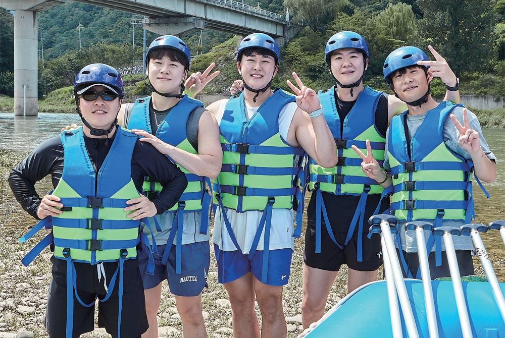
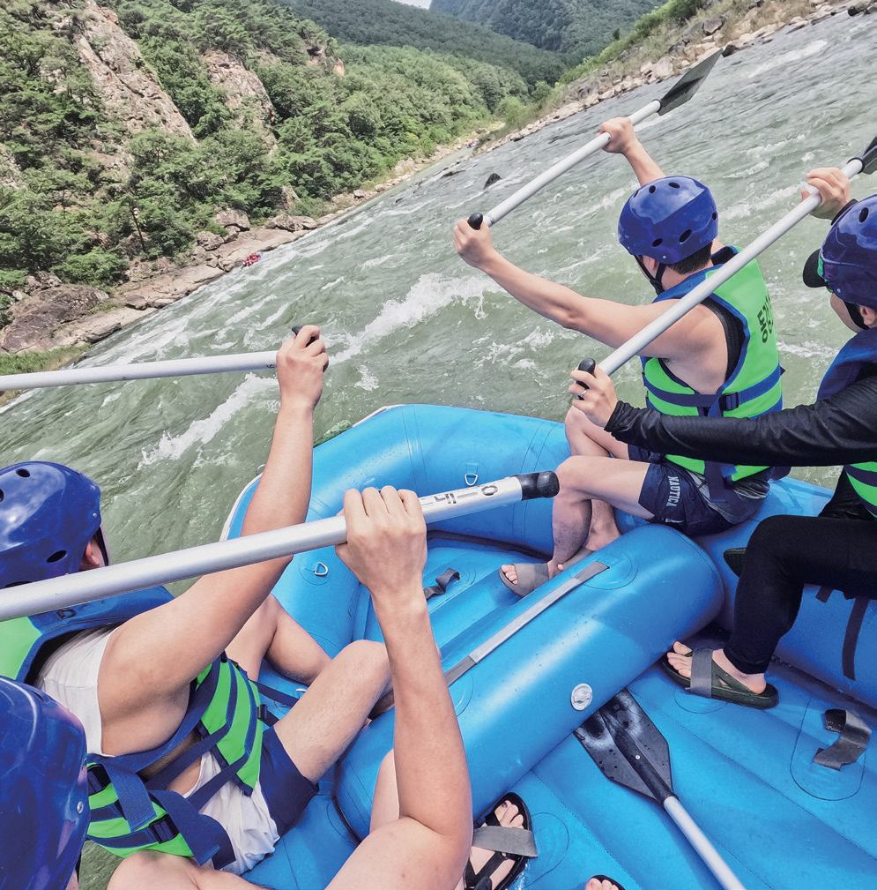
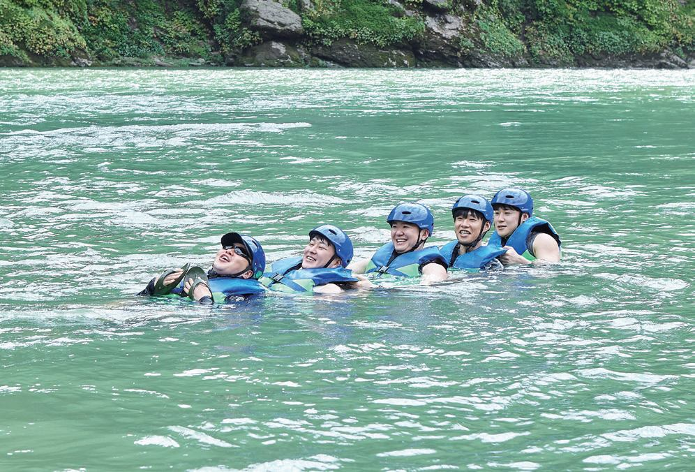
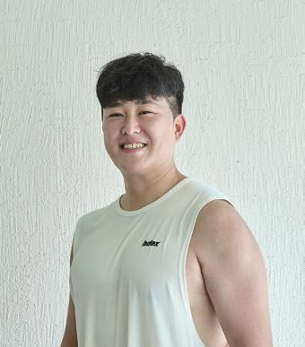
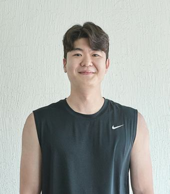
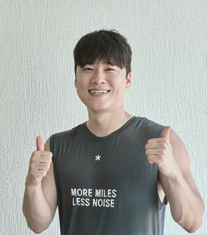
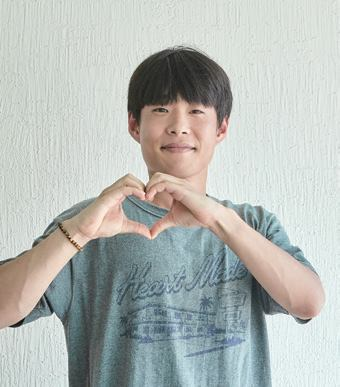
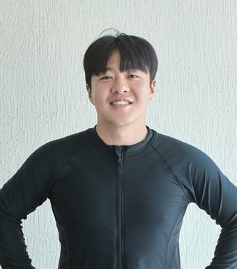

3줄 요약
- 강원본부 횡성지사의 사무직군·배전직군·배전설비안전센터 직원 5명이 ‘RE : CHARGE’로 래프팅에 도전했다.
- 영월 동강 어라연 코스 약 12㎞를 내려가며 “하나! 둘!” 구령 하나로 급류를 함께 넘었다.
- 급류보다 오래 남은 건 다 같이 강물에 뛰어든 시간, 2시간 반 동안 팀워크는 더 단단해졌다.
물에서는 할 수 있는 게 참 많다. 수영도 하고, 다이빙도 하고, 물살에 몸을 맡긴 채 둥둥 떠 있을 수도 있다. 이 모든 재미를 하나도 빠짐없이 누리고 돌아온 횡성지사 직원들의 유쾌한 래프팅 현장을 함께했다.
팀워크로 똘똘 뭉친 우리
횡성지사로 발령받은 지도 어느덧 1년. 임승혁 대리는 새로운 환경과 업무를 처음 마주했을 때 설렘만큼 걱정도 컸다고 말한다. 하지만 반갑게 맞아주고 아낌없이 도와준 동료들 덕분에 금세 적응할 수 있었다. 함께 머리를 맞대고 어려운 업무를 하나씩 해결해 나가는 동안 자신도 한층 성장해 있었다. 그래서 이번 ‘RE : CHARGE’에는 그동안 다져온 팀워크를 제대로 보여주자는 마음으로 신청서를 냈다.
“이번 체험은 조금 특별해요. 사무직군, 배전직군, 배전설비안전센터까지 지사의 다양한 직군이 한자리에 모였거든요. 평소에는 함께 일하면서도 이렇게 모두가 모일 기회는 많지 않은데, 오늘만큼은 업무를 잠시 내려놓고 마음껏 즐겨보려고요.”
오늘 모인 직원들의 공통점은 하나. ‘물이라면 자신 있다’라는 것. 프리다이빙과 스킨스쿠버, 스노클링, 수영까지 평소 물을 좋아하는 직원들이 의기투합해 한 팀이 됐다. 그런 이들이 선택한 종목은 래프팅. 얼핏보면 노만 열심히 저으면 되는 운동 같지만, 사실 래프팅의 핵심은 팀워크다. 한 사람이라도 박자를 놓치면 보트는 앞으로 가기는커녕 제자리에서 빙글빙글 돌기 십상이다. 모두가 “하나! 둘!” 구호에 맞춰 힘을 모아야 비로소 제대로 물살을 가를 수 있다.

함께 노를 저어 더 단단해진 사이
인제 내린천과 철원 한탄강도 유명하지만, 이날 직원들이 선택한 곳은 영월 동강의 어라연 코스다. 초보자도 부담 없이 즐길 수 있으면서 곳곳에 급류가 숨어 있어 호흡이 잘 맞는 팀일수록 더 짜릿한 재미를 느낄 수 있다. 문산나루터에서 섭세나루터까지 약 12㎞를 내려가는 동안 하소쉼터와 두꺼비바위, 어라연 협곡, 된꼬까리여울, 만지나루터 등 동강의 절경도 차례로 만날 수 있다.
구명조끼와 헬멧을 단단히 착용하고 안전교육까지 마치자 드디어 출발. 다 함께 보트를 강으로 옮기고 힘차게 노를 잡았다. “하나! 둘! 셋! 넷!” 우렁찬 구령과 함께 노를 젓자 보트가 물살을 가르며 앞으로 나아가기 시작했다.
처음 호흡을 맞춘다고는 믿기지 않을 만큼 손발이 척척 맞았다. 보트는 거침없이 앞으로 나아갔고, 여울과 급류를 지날 때마다 물보라는 시원하게 얼굴을 적셨다. 고개를 돌리면 또 다른 장관이 펼쳐졌다. 양옆으로 이어지는 태백산맥의 능선과 깎아지른 듯한 어라연 협곡이 한 폭의 산수화처럼 눈앞에 펼쳐졌다. “우와, 풍경이 정말 장관인데요.” 박경만 대리의 감탄에 모두가 고개를 끄덕였다.
한참 노를 젓던 이상우 대리의 “우리 이 정도면 래프팅 선수를 해도 되는 거 아닌가요?”라는 한 마디에 출발할 때의 긴장감은 온데간데없고 어느새 물살을 즐길 여유까지 생겼다. 하지만 래프팅이 보기만큼 만만한 운동은 아니다. 평소 액티비티를 즐긴다는 임승혁 대리도 생각보다 큰 체력 소모에 놀랐다고 한다.
혼자였다면 금방 지쳤을 텐데 끝까지 함께 노를 저어준 동료들이 있었기에 힘든 순간도 기분 좋은 땀방울로 바꿀 수 있었던 것 같아요.
누군가 힘이 빠지면 옆 사람이 조금 더 힘껏 노를 젓고, 거센 물살을 만나면 모두가 한목소리로 구령을 외쳤다. 그렇게 함께 노를 젓고, 물보라를 맞고, 웃는 사이 이들은 어느새 래프팅의 매력에 흠뻑 빠져들었다.
래프팅의 완성은, 풍덩!
래프팅에서는 물에 빠지는 게 국룰. 보트가 잠시 잔잔한 물살에 멈추자 직원들은 기다렸다는 듯 하나둘 강물로 뛰어들었다. 처음에는 조심스럽게 발을 담그나 싶더니 이내 물장구를 치고, 서로에게 물을 튀기며 본격적인 물놀이를 시작했다. 구명조끼에 몸을 맡긴 채 둥둥 떠서 하늘을 바라보기도 했다.


“래프팅보다 물놀이가 더 재미있는데요.” 이상우 대리의 진심 같은 한마디에 모두가 웃음을 터뜨렸다. 래프팅이 처음이라는 박강율 대리는 오히려 물에서 나오는 것을 아쉬워했다. “처음에는 물이 너무 차가운 건 아닐까 걱정했는데 막상 들어가 보니 나오기 싫을 정도로 좋은 거예요.”
어릴 적 가족들과 래프팅을 했다는 윤기훈 대리에게도 이날 가장 기억에 남는 순간은 급류가 아닌 물놀이였다. “다 같이 강물에 뛰어들어 물장구를 치고 둥둥 떠 있던 시간이 가장 기억에 남아요. 잠시나마 어린 시절로 돌아간 기분이 들더라고요.”
그렇게 웃고 떠는 사이 2시간 반은 눈 깜짝할 새 지나갔다. 아쉬움이 남았지만 괜찮았다. 또 함께하면 되니까. 급류를 함께 헤쳐나가고, 웃음도 함께 나눈 동강에서의 하루. 같은 방향을 바라보며 노를 저었던 시간은 동료들의 팀워크를 더욱 단단하게 만들었다.
Mini Interview
강원본부 횡성지사 5인방 후기
-

임승혁 전력공급팀 대리
사무실을 벗어나 자연 속에서 같은 방향을 바라보며 노를 젓다 보니 평소보다 훨씬 가까워진 기분이 들었어요. 1년 동안 함께 쌓아온 팀워크를 다시 한번 확인할 수 있었고, 앞으로 업무에서도 지금보다 더 서로를 믿고 의지할 수 있을 것 같습니다.
-

윤기훈 전력공급팀 대리
초등학생 이후 처음 해본 래프팅이었는데, 함께 호흡을 맞춰 노를 저으며 단합력도 높이고 중간중간 시원하게 수영까지 즐길 수 있어 기분 좋은 추억을 만들 수 있었습니다.
-

이상우 전력공급팀 대리
모두 힘을 모아 열심히 노를 저어 다른 팀을 하나둘 추월할 때는 우리 팀워크가 정말 좋다는 생각도 들었어요. 체력적으로 조금 힘들기는 했지만 그만큼 래프팅의 매력을 제대로 느낄 수 있었습니다.
-

박경만 고객지원팀 대리
다 같이 호흡을 맞춰 노를 젓고 물장구를 치며 웃다 보니 자연스럽게 서로에 대해 더 알아가는 기분이 들었어요. 일상에서 잠시 벗어나 동료들과 색다른 추억을 쌓을 수 있어 좋았습니다.
-

박강율 배전운영팀 대리
다 같이 노를 저으며 물살을 헤쳐 나가는 재미가 생각보다 훨씬 짜릿했어요. 다음에도 기회가 된다면 인제 내린천이나 철원 한탄강처럼 또 다른 곳에서 래프팅에 도전해 보고 싶습니다.